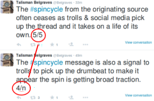
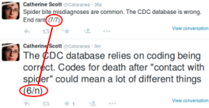
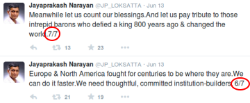

Easily compose a series of tweets of the form 1/n, 2/n .. n/n. We figure out the n for you!
It isn't easy to figure out n at the beginning!



Yet, if you do, you come across as awesome and smart!


TweetSmart helps you compose a series of tweets and does the job of numbering them appropriately!
Also available on: